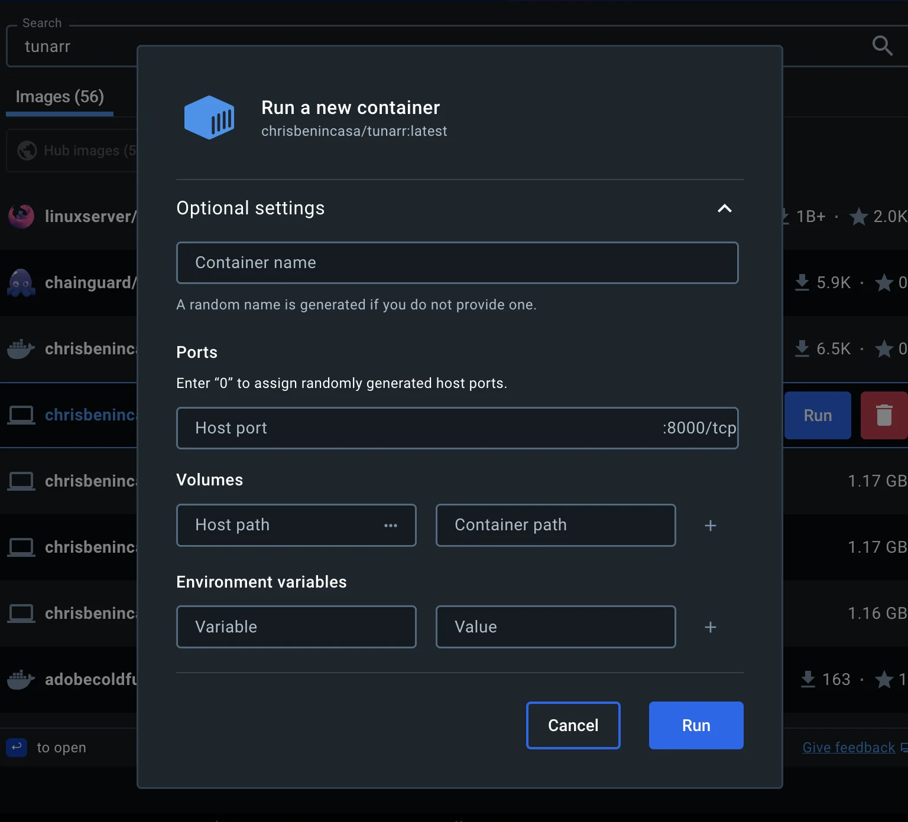

Run¶
Docker¶
docker run \
-v "$(pwd)"/tunarr:/config/tunarr \
-v "$(pwd)"/.dizquetv:/.dizquetv \
-e "TZ=America/New_York" \
-p 8000:8000 \
chrisbenincasa/tunarr
Or if using docker compose...
version: '3.8'
services:
tunarr:
image: chrisbenincasa/tunarr
# Uncomment along with runtime below to enable HW accel
# image: chrisbenincasa/tunarr:latest-nvidia
container_name: tunarr
ports:
- ${TUNARR_SERVER_PORT:-8000}:8000
# Uncomment if using the Nvidia container
# runtime: nvidia
environment:
- LOG_LEVEL=${TUNARR_LOG_LEVEL:-INFO}
# Replace this with your timezone to ensure accurate guide
# data and scheduling.
- TZ=America/New_York
# Uncomment if you'd like to adjust default config path
# - TUNARR_DATABASE_PATH=/your/path/tunarr
volumes:
# Choose a path on your host to map to /config/tunarr. This ensures
# that restarting the container will not delete your settings or DB.
- /path/to/tunarr/data:/config/tunarr
# The host path is relative to the location of the compose file
# This can also use an absolute path.
#
# Uncomment if migrating from dizquetv. Chnage the host path
# to the location of your dizquetv "database"
# - ./.dizquetv:/.dizquetv
Docker Desktop¶
If using Docker Desktop, before running the Tunarr container, you have to use the GUI to configure some of the options mentioned above. This can be done by clicking on the "Optional settings" button. This will show the UI below, where, at the very least, you should configure a volume bind mount (so that your configurations don't get deleted if the container restarts / Tunarr is upgraded). Set the "Container path" to /config/tunarr and the Host path to the path on your system where you want to save Tunarr data. Additionally, expose the port of your choice to access Tunarr, by setting "Host port" to the port of your choice.

Migrating from dizqueTV¶
Tip
We highly recommend that you use a copy of your .dizquetv database directory when starting out with Tunarr. While Tunarr does not alter or overwrite the .dizquetv database directory, it is still considered pre-release software and should be treated as such!
Upon first launch, Tunarr will look for a .dizquetv folder relative to its working directory and attempt a migration. Tunarr will try and migrate all legacy dizqueTV settings, including channels, programs, Plex servers, etc.
When using Docker, you can mount your a directory named .dizquetv when launching Tunarr to initiate the migration.
Note
You can force a legacy migration on subsequent launches of Tunarr using the --force_migration flag. But be careful! This can be destructive if you've done any additional configuration in Tunarr.
Hardware Encoding¶
Nvidia¶
There are many ways to enable usage of an Nvidia GPU in a Docker container. The latest, and arguably simplest, method is to install and configure the Nvidia Container Toolkit.
Docker CLI example with Nvidia¶
docker run \
--runtime nvidia
-v "$(pwd)"/tunarr:/config/tunarr \
-e "TZ=America/New_York" \
-p 8000:8000 \
chrisbenincasa/tunarr
Docker Compose example with Nvidia¶
version: '3.8'
services:
tunarr:
image: chrisbenincasa/tunarr:latest-nvidia
container_name: tunarr
ports:
- ${TUNARR_SERVER_PORT:-8000}:8000
runtime: nvidia
environment:
- LOG_LEVEL=${TUNARR_LOG_LEVEL:-INFO}
- NVIDIA_VISIBLE_DEVICES=all
- TZ=America/New_York
# Uncomment if you'd like to adjust default config path
# - TUNARR_DATABASE_PATH=/your/path/tunarr
volumes:
# Choose a path on your host to map to /config/tunarr. This ensures
# that restarting the container will not delete your settings or DB.
- /path/to/tunarr/data:/config/tunarr
QSV (Intel) / VA-API (Video Acceleration API)¶
For QSV compatability in Docker, you must mount /dev/dri the container:
Docker CLI Example¶
docker run \
-v "$(pwd)"/tunarr:/config/tunarr \
--device /dev/dri:/dev/dri \
-e "TZ=America/New_York" \
-p 8000:8000 \
chrisbenincasa/tunarr:latest-vaapi
Docker Compose Example¶
version: '3.8'
services:
tunarr:
image: chrisbenincasa/tunarr:latest-vaapi
container_name: tunarr
ports:
- ${TUNARR_SERVER_PORT:-8000}:8000
environment:
- LOG_LEVEL=${TUNARR_LOG_LEVEL:-INFO}
- TZ=America/New_York
# Pass all render devices to container
devices:
- /dev/dri:/dev/dri
volumes:
# Choose a path on your host to map to /config/tunarr. This ensures
# that restarting the container will not delete your settings or DB.
- /path/to/tunarr/data:/config/tunarr
Standalone¶
If using the standalone Tunarr scripts, you must simply extract the archive and run the packaged script file. On Unix, this is tunarr.sh and on Windows this is tunarr.bat.